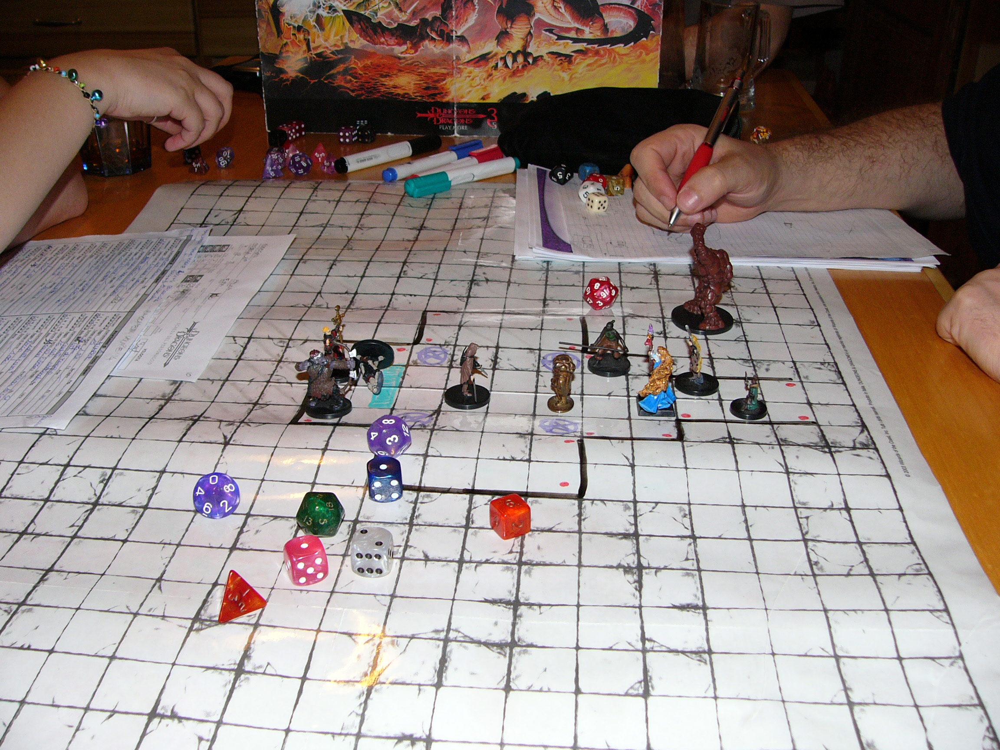

DUNGEONS AND DRAGONS OVERVIEW

Dungeons and Dragons table
Dungeons and Dragons (DND) is a table top roleplaying game. This means that the game is played by taking the role of a character and playing as it with atleast one other person. In DND there are atleast one but usally around four players and a dungeon master. The dungeon master (DM) is the person who runs the game. Most DND games consist of a campaigns, which in itself has several sessions. A session is when the players and the DM meet together to play. A campaign is a series of sessions that start with acquiring a large objective and ends with completing the goal or failing. The typical setting of a DND game is a medieval fantasy world. Players can interact with this world however they want (within the bounds of their character) and can even enter combat with non player characters (NPCs).
COMMON DND TERMINOLOGY
- DND: Dungeons and Dragons, The game
- DM: Dungeon Master, Person who runs the game
- GM: Game Master, The same as Dungeon Master
- NPC: Non Player Character, Characters in the game played by the DM instead of a player
- Session: A stretch of time dedicated to playing the game
- Campaign: A series of sessions with the same characters and story